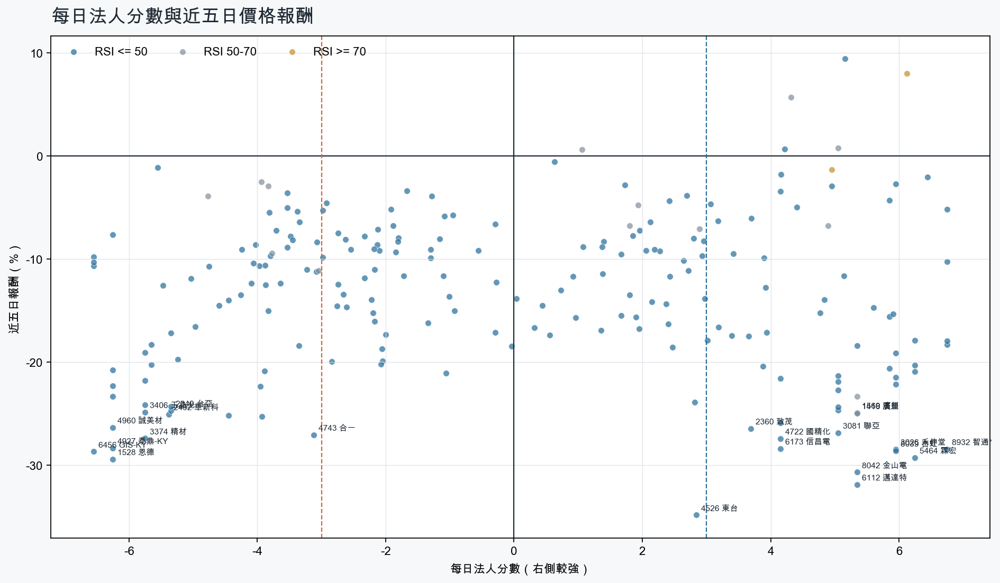
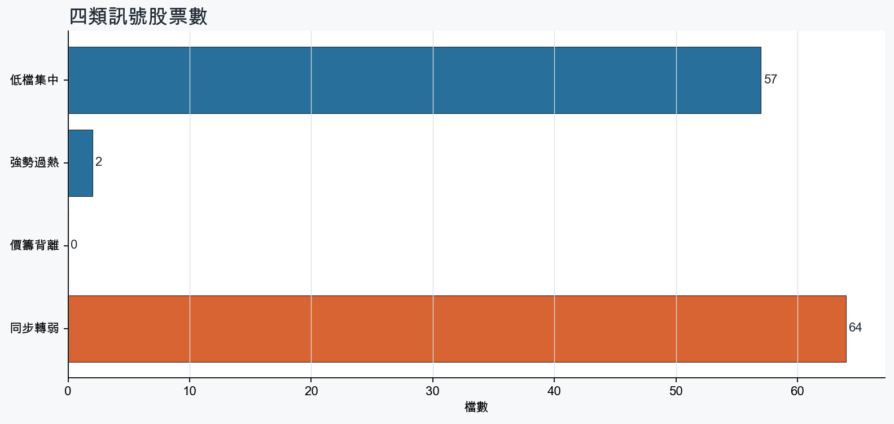
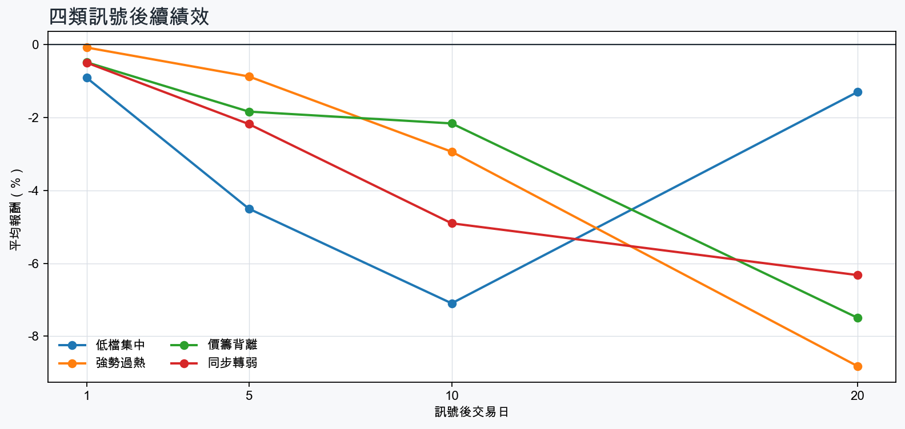

市場情緒偏空
近5日法人合計-7,898,731 張
篩選池上漲比例2.7%
籌碼好 / RSI低15 檔
籌碼差 / 價跌15 檔



EPS × PE VALUATION
法人常用的相對估值
顯示保守、基準與樂觀估值帶，不把單一數字包裝成精準目標價。
最新累計 EPS 依季數年化 × 同產業有效 P/E 的 Q25／中位數／Q75。排除本公司、非正 P/E，並以 1.5×IQR 排除離群值。估值帶是公開資料篩選值，不是法人目標價；未使用分析師預估 EPS。
MOOD × MONEY
情緒與籌碼雷達
熱度代表被討論程度；情緒分與法人方向分開計算。熱門不等於適合追價，樣本不足也不硬判多空。
| 股票 | 情緒 | 討論熱度 | 情緒 × 籌碼 | 情緒 × 基本面 |
|---|---|---|---|---|
| 3260 威剛低檔集中 | 情緒低迷 -41.4信心 67 | 1001 篇 / 24 留言 / 3 則新聞 | 法人布局、市場悲觀法人分 +6.8 | 基本面佳、情緒悲觀基本面分 +3.6 |
| 1815 富喬同步轉弱 | 情緒低迷 -59.5信心 60 | 921 篇 / 14 留言 / 3 則新聞 | 情籌雙弱法人分 -5.8 | 基本面佳、情緒悲觀基本面分 +3.6 |
| 6456 GIS-KY同步轉弱 | 偏空 -29.7信心 30 | 620 篇 / 0 留言 / 3 則新聞 | 情籌雙弱法人分 -6.5 | 基本面與情緒雙弱基本面分 -1.5 |
| 2492 華新科同步轉弱 | 偏空 -29.7信心 30 | 620 篇 / 0 留言 / 3 則新聞 | 情籌雙弱法人分 -5.4 | 基本面佳、情緒悲觀基本面分 +3.6 |
| 3374 精材同步轉弱 | 偏多 +29.7信心 30 | 620 篇 / 0 留言 / 3 則新聞 | 熱門但法人撤退法人分 -5.8 | 基本面與情緒共振基本面分 +3.6 |
| 6209 今國光同步轉弱 | 偏多 +29.7信心 30 | 620 篇 / 0 留言 / 3 則新聞 | 熱門但法人撤退法人分 -6.2 | 基本面與情緒共振基本面分 +3.6 |
| 1528 恩德同步轉弱 | 偏空 -29.7信心 30 | 620 篇 / 0 留言 / 3 則新聞 | 情籌雙弱法人分 -6.2 | 基本面與情緒分歧基本面分 -0.8 |
| 3406 玉晶光同步轉弱 | 偏空 -29.7信心 30 | 620 篇 / 0 留言 / 3 則新聞 | 情籌雙弱法人分 -5.8 | 基本面佳、情緒悲觀基本面分 +1.7 |
| 3189 景碩同步轉弱 | 偏空 -29.7信心 30 | 620 篇 / 0 留言 / 3 則新聞 | 情籌雙弱法人分 -4.0 | 基本面佳、情緒悲觀基本面分 +3.6 |
| 1477 聚陽強勢過熱 | 中性分歧 +0.0信心 30 | 620 篇 / 0 留言 / 3 則新聞 | 情籌混合法人分 +5.0 | 基本面與情緒分歧基本面分 +3.0 |
| 2451 創見低檔集中 | 中性分歧 +0.0信心 30 | 620 篇 / 0 留言 / 3 則新聞 | 情籌混合法人分 +5.2 | 基本面與情緒分歧基本面分 +3.6 |
| 8299 群聯低檔集中 | 中性分歧 +0.0信心 30 | 620 篇 / 0 留言 / 3 則新聞 | 情籌混合法人分 +5.8 | 基本面與情緒分歧基本面分 +3.6 |
01
籌碼好 / RSI低
優先研究基本面；法人續買且價格止穩時，才適合分批觀察。
| 股票 / 確認狀態 | 每日法人分 | 浦男式近似 | 法人加速度 | RSI / 相對強弱 | 量價確認 | 融資融券 | 每週集保確認 | 基本面 | EPS × 同業 P/E 估值 | 情緒 / 情籌 | 近期消息 | 論壇討論 |
|---|---|---|---|---|---|---|---|---|---|---|---|---|
| 6139 亞翔等待確認 · 100 分籌碼有訊號，但價格尚未確認 | +6.8法人 +2,584 張 / 5 天 | 接近 · 76法人籌碼偏多；法人買盤加速；買超具延續性；留意未站月線、中期均線未翻多 | +1,494 張近3日 +2,135 / 連續 +7 日 | 43.3相對大盤 +6.1% | 量比 1.68確認分 +2.5收盤跌破20日線；20日線低於60日線 | -%融資 - 張 / 融券 - 張 | +0.71 pp1000張 +0.72 pp | 單月營收年增 +62.6%；累計營收年增 +53.4%；2026 Q3 累計 EPS 41.25仍需觀察下一期財報延續性來源：公開資訊觀測站 | 基準 NT$ 884.4估值帶 652.9–1,184現價 551.0 · 低於估值帶 · 距基準 +60.5%2026 Q3 累計 EPS 41.25 → 年化 55.00其他電子同業 P/E 11.87／16.08／21.53 · n=69 · 信心較高以 Q3 累計 EPS 年化，不等同分析師全年預估來源：TWSE／TPEx 每日本益比 | 偏多 +19.8熱度 53 / 信心 20情籌混合 | 【09:50 即時新聞】亞翔(6139) 盤中走強近9% 聚焦半導體建廠訂單動能CMoney投資網誌 · 11/23亞翔6139股價強彈8%！4400億訂單助攻，EPS破41元，還能漲嗎？TOP1markets · 11/23 | 近期沒有明確提及本股的論壇樣本 |
| 2451 創見等待確認 · 94 分籌碼有訊號，但價格尚未確認 | +5.2法人 +3,463 張 / 5 天 | 接近 · 70法人籌碼偏多；法人買盤加速；買超具延續性；留意未站月線、中期均線未翻多 | +2,277 張近3日 +2,704 / 連續 +5 日 | 30.1相對大盤 +4.4% | 量比 1.53確認分 +2.1收盤跌破20日線；20日線低於60日線 | -%融資 - 張 / 融券 - 張 | +1.73 pp1000張 +2.55 pp | 單月營收年增 +191.6%；累計營收年增 +344.5%；2026 Q3 累計 EPS 62.74仍需觀察下一期財報延續性來源：公開資訊觀測站 | 基準 NT$ 1,490估值帶 1,008–2,254現價 232.0 · 低於估值帶 · 距基準 +542.2%2026 Q3 累計 EPS 62.74 → 年化 83.65半導體同業 P/E 12.05／17.81／26.95 · n=157 · 信心較高以 Q3 累計 EPS 年化，不等同分析師全年預估來源：TWSE／TPEx 每日本益比 | 中性分歧 +0.0熱度 62 / 信心 30情籌混合 | 熱門股／記憶體反攻！群聯看好明年供應吃緊攜力積電、創見等7檔飆漲停| 產經非凡新聞台 · 11/23記憶體拚回血！創見等3檔觸漲停 華邦電盤中衝近9%ETtoday財經雲 · 11/23 | 近期沒有明確提及本股的論壇樣本 |
| 8299 群聯等待確認 · 89 分籌碼有訊號，但價格尚未確認 | +5.8法人 +2,531 張 / 4 天 | 接近 · 65法人籌碼偏多；法人買盤加速；買超具延續性；留意未站月線、中期均線未翻多 | +2,746 張近3日 +2,718 / 連續 +3 日 | 38.6相對大盤 -2.8% | 量比 1.46確認分 +0.9收盤跌破20日線；20日線低於60日線 | -11.4%融資 -959 張 / 融券 -10 張 | +0.28 pp1000張 +1.89 pp | 單月營收年增 +346.3%；累計營收年增 +297.8%；2026 Q3 累計 EPS 325.49仍需觀察下一期財報延續性來源：公開資訊觀測站 | 基準 NT$ 7,729估值帶 5,230–11,696現價 1,450 · 低於估值帶 · 距基準 +433.1%2026 Q3 累計 EPS 325.5 → 年化 434.0半導體同業 P/E 12.05／17.81／26.95 · n=157 · 信心較高以 Q3 累計 EPS 年化，不等同分析師全年預估來源：TWSE／TPEx 每日本益比 | 中性分歧 +0.0熱度 62 / 信心 30情籌混合 | IC設計紅通通！聯發科、世芯、群聯帶5檔齊拉漲停 南亞科漲6%、華邦電衝7%Yahoo股市 · 11/23熱門股／記憶體反攻！群聯看好明年供應吃緊攜力積電、創見等7檔飆漲停| 產經非凡新聞台 · 11/23 | 近期沒有明確提及本股的論壇樣本 |
| 3260 威剛等待確認 · 90 分籌碼有訊號，但價格尚未確認 | +6.8法人 +4,553 張 / 5 天 | 未命中 · 55法人籌碼偏多；法人買盤加速；買超具延續性；留意未站月線、中期均線未翻多 | +3,981 張近3日 +3,792 / 連續 +5 日 | 22.5相對大盤 -3.9% | 量比 1.17確認分 +0.6收盤跌破20日線；20日線低於60日線；近20日弱於大盤 | -14.2%融資 -2,214 張 / 融券 +32 張 | +0.51 pp1000張 +0.20 pp | 單月營收年增 +282.3%；累計營收年增 +222.7%；2026 Q3 累計 EPS 101.47仍需觀察下一期財報延續性來源：公開資訊觀測站 | 基準 NT$ 2,410估值帶 1,630–3,646現價 249.5 · 低於估值帶 · 距基準 +865.8%2026 Q3 累計 EPS 101.5 → 年化 135.3半導體同業 P/E 12.05／17.81／26.95 · n=157 · 信心較高以 Q3 累計 EPS 年化，不等同分析師全年預估來源：TWSE／TPEx 每日本益比 | 情緒低迷 -41.4熱度 100 / 信心 67法人布局、市場悲觀 | 3260 威剛- 誠信對公司來說就是屁- 股市爆料同學會CMoney · 11/233260 威剛 - 三大法人都繼續賣超 合計五百億 - 股市爆料同學會CMoney · 11/23 | [情報] 2323 中環 賣穩懋、聯亞、威剛 皆賠PTT Stock · 11-23 · 24 留言 |
| 8932 智通*等待確認 · 86 分籌碼有訊號，但價格尚未確認 | +6.8法人 +6,512 張 / 5 天 | 未命中 · 55法人籌碼偏多；法人買盤加速；買超具延續性；留意未站月線、中期均線未翻多 | +2,908 張近3日 +4,779 / 連續 +7 日 | 17.0相對大盤 -23.8% | 量比 2.06確認分 -0.4收盤跌破20日線；20日線低於60日線；近20日弱於大盤 | -6.6%融資 -2,976 張 / 融券 -9 張 | +0.38 pp1000張 +0.70 pp | 單月營收年增 +18.2%；累計營收年增 +14.5%；2026 Q3 累計 EPS 1.60仍需觀察下一期財報延續性來源：公開資訊觀測站 | 基準 NT$ 31.38估值帶 24.96–52.22現價 50.10 · 估值帶內 · 距基準 -37.4%2026 Q3 累計 EPS 1.60 → 年化 2.13數位雲端同業 P/E 11.70／14.71／24.48 · n=29 · 信心較高以 Q3 累計 EPS 年化，不等同分析師全年預估來源：TWSE／TPEx 每日本益比 | 樣本不足 +0.0熱度 0 / 信心 0情緒樣本不足 | 近期沒有通過股票語境篩選的新聞 | 近期沒有明確提及本股的論壇樣本 |
| 4967 十銓等待確認 · 89 分籌碼有訊號，但價格尚未確認 | +5.0法人 +1,987 張 / 3 天 | 接近 · 71法人籌碼偏多；法人買盤加速；買超具延續性；留意未站月線、中期均線未翻多 | +1,166 張近3日 +1,320 / 連續 +2 日 | 36.0相對大盤 +13.2% | 量比 0.84確認分 +2.2收盤跌破20日線；20日線低於60日線 | -%融資 - 張 / 融券 - 張 | -1.47 pp1000張 -0.57 pp | 單月營收年增 +159.4%；累計營收年增 +95.2%；2026 Q3 累計 EPS 90.95仍需觀察下一期財報延續性來源：公開資訊觀測站 | 基準 NT$ 2,160估值帶 1,461–3,268現價 233.0 · 低於估值帶 · 距基準 +826.9%2026 Q3 累計 EPS 90.95 → 年化 121.3半導體同業 P/E 12.05／17.81／26.95 · n=157 · 信心較高以 Q3 累計 EPS 年化，不等同分析師全年預估來源：TWSE／TPEx 每日本益比 | 偏多 +19.8熱度 53 / 信心 20情籌混合 | 盤中速報 - 十銓(4967)股價拉至漲停，漲停價238.0元，成交3,853張TradingView · 11/23【10:20 即時新聞】十銓(4967) 股價走強，市場聚焦高成長動能CMoney投資網誌 · 11/23 | 近期沒有明確提及本股的論壇樣本 |
| 5328 華容等待確認 · 83 分籌碼有訊號，但價格尚未確認 | +6.2法人 +2,456 張 / 5 天 | 未命中 · 55法人籌碼偏多；法人買盤加速；買超具延續性；留意未站月線、中期均線未翻多 | +666 張近3日 +1,668 / 連續 +7 日 | 28.4相對大盤 -18.8% | 量比 1.30確認分 -0.4收盤跌破20日線；20日線低於60日線；近20日弱於大盤 | -16.0%融資 -738 張 / 融券 -13 張 | +1.45 pp1000張 +1.27 pp | 單月營收年增 +46.7%；累計營收年增 +25.6%；2026 Q3 累計 EPS 0.582026 Q3 累計營益率 3.4%來源：公開資訊觀測站 | 基準 NT$ 13.55估值帶 9.59–19.67現價 30.65 · 高於估值帶 · 距基準 -55.8%2026 Q3 累計 EPS 0.58 → 年化 0.77電子零組件同業 P/E 12.40／17.52／25.44 · n=143 · 信心較高以 Q3 累計 EPS 年化，不等同分析師全年預估來源：TWSE／TPEx 每日本益比 | 樣本不足 +0.0熱度 0 / 信心 0情緒樣本不足 | 近期沒有通過股票語境篩選的新聞 | 近期沒有明確提及本股的論壇樣本 |
| 2542 興富發等待確認 · 83 分籌碼有訊號，但價格尚未確認 | +4.2法人 +7,537 張 / 5 天 | 接近 · 76法人籌碼偏多；法人買盤加速；買超具延續性；留意未站月線、中期均線未翻多 | +534 張近3日 +5,507 / 連續 +9 日 | 35.3相對大盤 +11.6% | 量比 1.00確認分 +1.3收盤跌破20日線；20日線低於60日線 | -%融資 - 張 / 融券 - 張 | +0.07 pp1000張 +0.06 pp | 單月營收年增 +31.7%；累計營收年增 +185.5%；2026 Q3 累計 EPS 3.83仍需觀察下一期財報延續性來源：公開資訊觀測站 | 基準 NT$ 43.87估值帶 29.16–65.57現價 36.60 · 估值帶內 · 距基準 +19.9%2026 Q3 累計 EPS 3.83 → 年化 5.11建材營造同業 P/E 5.71／8.59／12.84 · n=65 · 信心較高以 Q3 累計 EPS 年化，不等同分析師全年預估來源：TWSE／TPEx 每日本益比 | 中性分歧 +9.9熱度 62 / 信心 30情籌混合 | 興富發今除息4元！開盤後跌近6%陷貼息窘境 分析師：上漲原因消失了Yahoo股市 · 09/22《一週投信賣超12-9》新纖(441)、微星(428)、興富發(357)富聯網 · 11/23 | 近期沒有明確提及本股的論壇樣本 |
| 2472 立隆電等待確認 · 80 分籌碼有訊號，但價格尚未確認 | +6.8法人 +1,987 張 / 5 天 | 未命中 · 55法人籌碼偏多；法人買盤加速；買超具延續性；留意未站月線、中期均線未翻多 | +999 張近3日 +1,460 / 連續 +5 日 | 30.2相對大盤 -18.2% | 量比 1.40確認分 -1.0收盤跌破20日線；20日線低於60日線；近20日弱於大盤 | -%融資 - 張 / 融券 - 張 | -0.54 pp1000張 -1.13 pp | 單月營收年增 +60.6%；累計營收年增 +29.3%；2026 Q3 累計 EPS 6.91仍需觀察下一期財報延續性來源：公開資訊觀測站 | 基準 NT$ 162.3估值帶 114.3–237.2現價 125.0 · 估值帶內 · 距基準 +29.9%2026 Q3 累計 EPS 6.91 → 年化 9.21電子零組件同業 P/E 12.41／17.62／25.74 · n=144 · 信心較高以 Q3 累計 EPS 年化，不等同分析師全年預估來源：TWSE／TPEx 每日本益比 | 中性分歧 +0.0熱度 53 / 信心 20情籌混合 | 立隆電（2472）做什麼的？車用電子、AI伺服器供電與財報一次看懂口袋證券 · 06/25立隆電配發3.5元股利，估Q3營收再攀升- 新聞MoneyDJ · 06/24 | 近期沒有明確提及本股的論壇樣本 |
| 5388 中磊等待確認 · 79 分籌碼有訊號，但價格尚未確認 | +6.4法人 +2,807 張 / 5 天 | 接近 · 68法人籌碼偏多；買超具延續性；明顯強於大盤；留意未站月線、中期均線未翻多 | -327 張近3日 +1,397 / 連續 +10 日 | 49.8相對大盤 +11.3% | 量比 0.85確認分 -1.1收盤跌破20日線；20日線低於60日線；法人買盤減速 | -%融資 - 張 / 融券 - 張 | +0.29 pp1000張 +0.87 pp | 單月營收年增 +63.6%；累計營收年增 +55.2%；2026 Q3 累計 EPS 4.342026 Q3 累計營益率 3.4%來源：公開資訊觀測站 | 基準 NT$ 102.7估值帶 69.04–215.4現價 67.50 · 低於估值帶 · 距基準 +52.2%2026 Q3 累計 EPS 4.34 → 年化 5.79通信網路同業 P/E 11.93／17.75／37.23 · n=61 · 信心中等以 Q3 累計 EPS 年化，不等同分析師全年預估來源：TWSE／TPEx 每日本益比 | 偏多 +29.7熱度 62 / 信心 30情籌共振 | 【11:58 即時新聞】中磊(5388)盤中小漲續守七字頭，短多關注法人買盤CMoney投資網誌 · 11/19【11:56 即時新聞】中磊(5388)盤中走強 外資投信同步買超延續CMoney投資網誌 · 11/17 | 近期沒有明確提及本股的論壇樣本 |
| 2478 大毅等待確認 · 77 分籌碼有訊號，但價格尚未確認 | +6.8法人 +2,396 張 / 5 天 | 未命中 · 50法人籌碼偏多；法人買盤加速；買超具延續性；留意未站月線、中期均線未翻多 | +2,435 張近3日 +2,252 / 連續 +5 日 | 33.0相對大盤 -15.4% | 量比 0.87確認分 -1.8收盤跌破20日線；20日線低於60日線；近20日弱於大盤 | -%融資 - 張 / 融券 - 張 | -2.07 pp1000張 +1.48 pp | 單月營收年增 +22.0%；累計營收年增 +23.4%；2026 Q3 累計 EPS 5.26仍需觀察下一期財報延續性來源：公開資訊觀測站 | 基準 NT$ 123.6估值帶 87.04–180.5現價 76.50 · 低於估值帶 · 距基準 +61.5%2026 Q3 累計 EPS 5.26 → 年化 7.01電子零組件同業 P/E 12.41／17.62／25.74 · n=144 · 信心較高以 Q3 累計 EPS 年化，不等同分析師全年預估來源：TWSE／TPEx 每日本益比 | 樣本不足 +0.0熱度 38 / 信心 10情緒樣本不足 | 處置股追蹤 0526／今日新增 10 檔，國巨、大毅、昇達科首入列，禾伸堂、大量再遭二度處置｜股市話題永豐金證券 · 05/26 | 近期沒有明確提及本股的論壇樣本 |
| 2305 全友等待確認 · 75 分籌碼有訊號，但價格尚未確認 | +6.2法人 +3,725 張 / 5 天 | 未命中 · 45法人籌碼偏多；法人買盤加速；買超具延續性；留意未站月線、中期均線未翻多 | +353 張近3日 +1,946 / 連續 +5 日 | 26.7相對大盤 -24.5% | 量比 0.36確認分 -2.4收盤跌破20日線；20日線低於60日線；近20日弱於大盤；成交量不足 | -%融資 - 張 / 融券 - 張 | +1.46 pp1000張 +0.83 pp | 單月營收年增 +165.3%；累計營收年增 +129.5%；2026 Q3 累計 EPS 0.85仍需觀察下一期財報延續性來源：公開資訊觀測站 | 基準 NT$ 13.68估值帶 10.64–18.03現價 29.50 · 高於估值帶 · 距基準 -53.6%2026 Q3 累計 EPS 0.85 → 年化 1.13電腦及週邊同業 P/E 9.39／12.07／15.91 · n=82 · 信心較高以 Q3 累計 EPS 年化，不等同分析師全年預估來源：TWSE／TPEx 每日本益比 | 中性分歧 +0.0熱度 62 / 信心 30情籌混合 | 【12:12 即時新聞】全友(2305)亮燈漲停，光通訊題材再受關注CMoney投資網誌 · 11/23盤中速報 - 全友(2305)股價拉至漲停，漲停價29.5元，成交1,451張TradingView · 11/23 | 近期沒有明確提及本股的論壇樣本 |
| 2481 強茂等待確認 · 76 分籌碼有訊號，但價格尚未確認 | +5.0法人 +4,697 張 / 4 天 | 未命中 · 55法人籌碼偏多；法人買盤加速；買超具延續性；留意未站月線、中期均線未翻多 | +4,061 張近3日 +4,422 / 連續 +4 日 | 27.8相對大盤 -22.6% | 量比 1.87確認分 -1.0收盤跌破20日線；20日線低於60日線；近20日弱於大盤 | -%融資 - 張 / 融券 - 張 | +0.41 pp1000張 +1.06 pp | 單月營收年增 +33.2%；累計營收年增 +21.6%；2026 Q3 累計 EPS 3.73仍需觀察下一期財報延續性來源：公開資訊觀測站 | 基準 NT$ 88.13估值帶 58.29–134.0現價 88.10 · 估值帶內 · 距基準 +0.0%2026 Q3 累計 EPS 3.73 → 年化 4.97半導體同業 P/E 11.72／17.72／26.95 · n=157 · 信心較高以 Q3 累計 EPS 年化，不等同分析師全年預估來源：TWSE／TPEx 每日本益比 | 中性分歧 +0.0熱度 62 / 信心 30情籌混合 | 強茂(2481)、統新(6426)籌碼優勢怎麼看？｜大戶投策略選股｜主力吃貨｜豐雲學堂2026 年 11 月永豐金證券 · 09/04強茂(2481)做什麼？垂直整合的功率半導體佼佼者，受惠安世半導體事件轉單｜股市話題｜豐雲學堂2026 年 11 月永豐金證券 · 08/21 | 近期沒有明確提及本股的論壇樣本 |
| 8096 擎亞等待確認 · 79 分籌碼有訊號，但價格尚未確認 | +6.2法人 +2,270 張 / 5 天 | 未命中 · 55法人籌碼偏多；法人買盤加速；買超具延續性；留意未站月線、中期均線未翻多 | +1,212 張近3日 +2,058 / 連續 +7 日 | 30.4相對大盤 -12.7% | 量比 1.23確認分 -0.4收盤跌破20日線；20日線低於60日線；近20日弱於大盤 | -9.5%融資 -921 張 / 融券 -8 張 | -0.47 pp1000張 -2.50 pp | 單月營收年增 +370.3%；累計營收年增 +122.7%；2026 Q3 累計 EPS 8.512026 Q3 累計營益率 2.7%來源：公開資訊觀測站 | 基準 NT$ 92.82估值帶 71.48–129.1現價 54.70 · 低於估值帶 · 距基準 +69.7%2026 Q3 累計 EPS 8.51 → 年化 11.35電子通路同業 P/E 6.30／8.18／11.38 · n=27 · 信心較高以 Q3 累計 EPS 年化，不等同分析師全年預估來源：TWSE／TPEx 每日本益比 | 樣本不足 +9.9熱度 38 / 信心 10情緒樣本不足 | 擎亞 (8096) 做什麼的？三星在台重要合作夥伴！營運亮點與財報觀察全解析口袋證券 · 02/02 | 近期沒有明確提及本股的論壇樣本 |
| 2365 昆盈等待確認 · 76 分籌碼有訊號，但價格尚未確認 | +5.6法人 +1,854 張 / 5 天 | 未命中 · 50法人籌碼偏多；法人買盤加速；買超具延續性；留意未站月線、中期均線未翻多 | +1,159 張近3日 +1,531 / 連續 +9 日 | 27.8相對大盤 -8.1% | 量比 1.65確認分 -1.0收盤跌破20日線；20日線低於60日線；近20日弱於大盤；流動性偏低 | -%融資 - 張 / 融券 - 張 | -0.07 pp1000張 +0.27 pp | 單月營收年增 +39.6%；累計營收年增 +15.9%；2026 Q3 累計 EPS 0.412026 Q3 累計營益率 3.8%來源：公開資訊觀測站 | 基準 NT$ 6.63估值帶 5.13–8.74現價 19.15 · 高於估值帶 · 距基準 -65.4%2026 Q3 累計 EPS 0.41 → 年化 0.55電腦及週邊同業 P/E 9.39／12.13／15.98 · n=83 · 信心較高以 Q3 累計 EPS 年化，不等同分析師全年預估來源：TWSE／TPEx 每日本益比 | 樣本不足 +0.0熱度 0 / 信心 0情緒樣本不足 | 近期沒有通過股票語境篩選的新聞 | 近期沒有明確提及本股的論壇樣本 |
02
籌碼好 / RSI高
趨勢強但不追價，等待量縮、RSI降溫或回測支撐。
| 股票 / 確認狀態 | 每日法人分 | 浦男式近似 | 法人加速度 | RSI / 相對強弱 | 量價確認 | 融資融券 | 每週集保確認 | 基本面 | EPS × 同業 P/E 估值 | 情緒 / 情籌 | 近期消息 | 論壇討論 |
|---|---|---|---|---|---|---|---|---|---|---|---|---|
| 1477 聚陽等待拉回 · 100 分等拉回，不追價 | +5.0法人 +2,805 張 / 3 天 | 命中 · 96站上月線；中期均線偏多；法人籌碼偏多；留意動能位置非最佳 | +3,629 張近3日 +3,230 / 連續 +3 日 | 70.6相對大盤 +26.0% | 量比 0.91確認分 +6.5價格、量能與籌碼未見明顯弱項 | -%融資 - 張 / 融券 - 張 | +1.97 pp1000張 +0.89 pp | 單月營收年增 +15.1%；累計營收年增 +1.3%；2026 Q3 累計 EPS 11.62仍需觀察下一期財報延續性來源：公開資訊觀測站 | 基準 NT$ 191.0估值帶 130.3–310.2現價 221.5 · 估值帶內 · 距基準 -13.8%2026 Q3 累計 EPS 11.62 → 年化 15.49紡織纖維同業 P/E 8.41／12.33／20.02 · n=30 · 信心較高以 Q3 累計 EPS 年化，不等同分析師全年預估來源：TWSE／TPEx 每日本益比 | 中性分歧 +0.0熱度 62 / 信心 30情籌混合 | 【1120台股盤前】加權摜破年線、櫃買破底，限空令2.0上路，巴菲特護城河策略鎖定【聯強】、【聚陽】、【裕融】永豐金證券 · 11/23年化配息率飆22%！00930「重倉聚陽、神基、鴻海」雙月配0.75元 4檔ETF今最後買進日Yahoo股市 · 11/23 | 近期沒有明確提及本股的論壇樣本 |
| 3023 信邦等待拉回 · 100 分等拉回，不追價 | +6.1法人 +2,024 張 / 5 天 | 接近 · 86站上月線；法人籌碼偏多；法人買盤加速；留意中期均線未翻多、動能位置非最佳 | +569 張近3日 +1,334 / 連續 +6 日 | 75.6相對大盤 +13.2% | 量比 1.12確認分 +5.020日線低於60日線 | -%融資 - 張 / 融券 - 張 | -0.80 pp1000張 -0.77 pp | 單月營收年增 +32.0%；累計營收年增 +16.9%；2026 Q3 累計 EPS 11.16仍需觀察下一期財報延續性來源：公開資訊觀測站 | 基準 NT$ 261.3估值帶 184.5–383.0現價 277.5 · 估值帶內 · 距基準 -5.8%2026 Q3 累計 EPS 11.16 → 年化 14.88電子零組件同業 P/E 12.40／17.56／25.74 · n=144 · 信心較高以 Q3 累計 EPS 年化，不等同分析師全年預估來源：TWSE／TPEx 每日本益比 | 偏多 +19.8熱度 53 / 信心 20情籌混合 | 《投信買超7-5》世芯KY(289)、鴻海(249)、信邦(245)富聯網 · 11/23焦點股》信邦：營收連7月創高 逆勢大漲自由財經 · 11/05 | 近期沒有明確提及本股的論壇樣本 |
03
籌碼差 / 股價上漲
可能是事件行情或軋空；沒有籌碼改善前避免追高。
今日沒有股票同時符合本組的完整條件。
04
籌碼差 / 股價下跌
籌碼與價格同弱，原則上迴避，等待法人與大戶同時回補。
| 股票 / 確認狀態 | 每日法人分 | 浦男式近似 | 法人加速度 | RSI / 相對強弱 | 量價確認 | 融資融券 | 每週集保確認 | 基本面 | EPS × 同業 P/E 估值 | 情緒 / 情籌 | 近期消息 | 論壇討論 |
|---|---|---|---|---|---|---|---|---|---|---|---|---|
| 6456 GIS-KY風險警示 · 5 分迴避，等待籌碼翻正 | -6.5法人 -16,972 張 / 0 天 | 未命中 · 28中期均線偏多；法人買盤加速；流動性足夠；留意未站月線、法人籌碼偏弱 | +6,124 張近3日 -5,998 / 連續 -7 日 | 37.5相對大盤 -16.0% | 量比 0.52確認分 -2.4收盤跌破20日線；近20日弱於大盤；成交量不足 | -%融資 - 張 / 融券 - 張 | -1.75 pp1000張 -1.00 pp | 單月營收年增 +167.5%累計營收年增 -1.8%；2026 Q3 累計 EPS -5.93；2026 Q3 累計營益率 -4.3%來源：公開資訊觀測站 | 不適用年化 EPS 非正數，不適合使用本益比估值 | 偏空 -29.7熱度 62 / 信心 30情籌雙弱 | 《光電股》GIS-KY遭外資連7賣 10月每股虧0.7元富聯網 · 11/23盈餘：GIS-KY(6456)股價遭警示，10月歸屬母公司淨損2.33億元，EPS -0.7元富聯網 · 11/23 | 近期沒有明確提及本股的論壇樣本 |
| 2492 華新科風險警示 · 24 分迴避，等待籌碼翻正 | -5.4法人 -4,528 張 / 1 天 | 未命中 · 37法人買盤加速；量價健康；基本面有支撐；留意未站月線、中期均線未翻多 | +9,403 張近3日 -628 / 連續 -2 日 | 21.9相對大盤 -27.5% | 量比 1.10確認分 -1.0收盤跌破20日線；20日線低於60日線；近20日弱於大盤 | -%融資 - 張 / 融券 - 張 | -5.69 pp1000張 -4.57 pp | 單月營收年增 +57.1%；累計營收年增 +28.7%；2026 Q3 累計 EPS 9.66仍需觀察下一期財報延續性來源：公開資訊觀測站 | 基準 NT$ 226.9估值帶 159.7–331.5現價 193.0 · 估值帶內 · 距基準 +17.6%2026 Q3 累計 EPS 9.66 → 年化 12.88電子零組件同業 P/E 12.40／17.62／25.74 · n=144 · 信心較高以 Q3 累計 EPS 年化，不等同分析師全年預估來源：TWSE／TPEx 每日本益比 | 偏空 -29.7熱度 62 / 信心 30情籌雙弱 | 外資賣超289億！國巨、華新科法人分歧 台玻漲停外資卻大賣！聚財網 · 11/232492 華新科 - 之前漲最兇的，現在就跌最深 - 股市爆料同學會CMoney · 11/23 | 近期沒有明確提及本股的論壇樣本 |
| 3374 精材風險警示 · 35 分迴避，等待籌碼翻正 | -5.8法人 -10,991 張 / 0 天 | 未命中 · 43法人買盤加速；量價健康；基本面有支撐；留意未站月線、中期均線未翻多 | +8,827 張近3日 -2,613 / 連續 -6 日 | 40.0相對大盤 -6.7% | 量比 1.29確認分 -0.1收盤跌破20日線；20日線低於60日線；近20日弱於大盤 | -6.2%融資 -1,186 張 / 融券 -11 張 | -0.67 pp1000張 +0.50 pp | 單月營收年增 +39.0%；累計營收年增 +32.4%；2026 Q3 累計 EPS 5.12仍需觀察下一期財報延續性來源：公開資訊觀測站 | 基準 NT$ 112.8估值帶 78.98–173.9現價 339.5 · 高於估值帶 · 距基準 -66.8%2026 Q3 累計 EPS 5.12 → 年化 6.83半導體同業 P/E 11.57／16.52／25.48 · n=153 · 信心較高以 Q3 累計 EPS 年化，不等同分析師全年預估來源：TWSE／TPEx 每日本益比 | 偏多 +29.7熱度 62 / 信心 30熱門但法人撤退 | 3374 精材 - 哲哲：歐印接著漲停 - 股市爆料同學會CMoney · 11/23精材接下台積電封裝委外，2029 年量產後要賣多少才會賺錢？口袋證券 · 11/18 | 近期沒有明確提及本股的論壇樣本 |
| 4960 誠美材風險警示 · 4 分迴避，等待籌碼翻正 | -6.2法人 -7,623 張 / 0 天 | 未命中 · 28中期均線偏多；法人買盤加速；流動性足夠；留意未站月線、法人籌碼偏弱 | +1,555 張近3日 -5,538 / 連續 -7 日 | 35.3相對大盤 -10.8% | 量比 0.41確認分 -2.4收盤跌破20日線；近20日弱於大盤；成交量不足 | -%融資 - 張 / 融券 - 張 | +0.80 pp1000張 +0.57 pp | 尚無明確成長訊號單月營收年增 -23.6%；累計營收年增 -11.7%；2026 Q3 累計 EPS -1.01來源：公開資訊觀測站 | 不適用年化 EPS 非正數，不適合使用本益比估值 | 樣本不足 +9.9熱度 38 / 信心 10情緒樣本不足 | 誠美材攻高階偏光板/先進封裝，拚改善獲利結構- 新聞MoneyDJ · 10/28 | 近期沒有明確提及本股的論壇樣本 |
| 6209 今國光風險警示 · 14 分迴避，等待籌碼翻正 | -6.2法人 -3,738 張 / 0 天 | 未命中 · 27法人買盤加速；基本面有支撐；流動性足夠；留意未站月線、中期均線未翻多 | +2,306 張近3日 -1,871 / 連續 -6 日 | 32.7相對大盤 -23.3% | 量比 0.51確認分 -2.4收盤跌破20日線；20日線低於60日線；近20日弱於大盤；成交量不足 | -%融資 - 張 / 融券 - 張 | -9.85 pp1000張 -9.42 pp | 單月營收年增 +48.9%；累計營收年增 +68.2%；2026 Q3 累計 EPS 2.54仍需觀察下一期財報延續性來源：公開資訊觀測站 | 基準 NT$ 58.86估值帶 36.34–83.25現價 56.10 · 估值帶內 · 距基準 +4.9%2026 Q3 累計 EPS 2.54 → 年化 3.39光電同業 P/E 10.73／17.38／24.58 · n=70 · 信心較高以 Q3 累計 EPS 年化，不等同分析師全年預估來源：TWSE／TPEx 每日本益比 | 偏多 +29.7熱度 62 / 信心 30熱門但法人撤退 | 今國光紅外鏡頭明年續拼成長，再投4億元擴產- 新聞MoneyDJ · 11/23今國光布局未來十年! CPO送樣挑戰明年量產| 科技非凡新聞台 · 11/20 | 近期沒有明確提及本股的論壇樣本 |
| 6278 台表科風險警示 · 5 分迴避，等待籌碼翻正 | -3.9法人 -2,249 張 / 1 天 | 未命中 · 25基本面有支撐；流動性足夠；留意未站月線、中期均線未翻多 | -5,292 張近3日 -3,320 / 連續 -4 日 | 31.3相對大盤 -26.4% | 量比 0.78確認分 -5.8收盤跌破20日線；20日線低於60日線；近20日弱於大盤；法人買盤減速 | -%融資 - 張 / 融券 - 張 | -4.49 pp1000張 -2.42 pp | 單月營收年增 +25.2%；累計營收年增 +8.3%；2026 Q3 累計 EPS 8.312026 Q3 累計營益率 6.9%來源：公開資訊觀測站 | 基準 NT$ 193.9估值帶 118.9–272.4現價 155.5 · 估值帶內 · 距基準 +24.7%2026 Q3 累計 EPS 8.31 → 年化 11.08光電同業 P/E 10.73／17.50／24.58 · n=70 · 信心較高以 Q3 累計 EPS 年化，不等同分析師全年預估來源：TWSE／TPEx 每日本益比 | 樣本不足 +0.0熱度 0 / 信心 0情緒樣本不足 | 近期沒有通過股票語境篩選的新聞 | 近期沒有明確提及本股的論壇樣本 |
| 1528 恩德風險警示 · 2 分迴避，等待籌碼翻正 | -6.2法人 -5,058 張 / 0 天 | 未命中 · 21中期均線偏多；流動性足夠；留意未站月線、法人籌碼偏弱 | -2,283 張近3日 -3,447 / 連續 -5 日 | 36.8相對大盤 -6.2% | 量比 0.28確認分 -5.9收盤跌破20日線；近20日弱於大盤；成交量不足；法人買盤減速 | -%融資 - 張 / 融券 - 張 | +6.77 pp1000張 +5.41 pp | 單月營收年增 +9.2%；累計營收年增 +17.2%2026 Q3 累計 EPS -0.60；2026 Q3 累計營益率 -0.4%來源：公開資訊觀測站 | 不適用年化 EPS 非正數，不適合使用本益比估值 | 偏空 -29.7熱度 62 / 信心 30情籌雙弱 | 盈餘：恩德(1528)股價遭警示，自結10月歸屬母公司淨利2100萬元，EPS 0.11元富聯網 · 11/23《電機股》注意股：恩德 近5日跌34.19%富聯網 · 11/23 | 近期沒有明確提及本股的論壇樣本 |
| 4927 泰鼎-KY風險警示 · 27 分迴避，等待籌碼翻正 | -6.2法人 -11,664 張 / 0 天 | 未命中 · 38中期均線偏多；法人買盤加速；量價健康；留意未站月線、法人籌碼偏弱 | +2,420 張近3日 -6,807 / 連續 -7 日 | 37.6相對大盤 -10.6% | 量比 1.08確認分 -1.0收盤跌破20日線；近20日弱於大盤 | -%融資 - 張 / 融券 - 張 | +4.36 pp1000張 +3.63 pp | 單月營收年增 +87.0%；累計營收年增 +16.8%2026 Q3 累計 EPS -6.06；2026 Q3 累計營益率 -14.3%來源：公開資訊觀測站 | 不適用年化 EPS 非正數，不適合使用本益比估值 | 樣本不足 +9.9熱度 38 / 信心 10情緒樣本不足 | 【即時新聞】最新！泰鼎-KY今日公告10月自結獲利0.46元，單月淨利成長159%轉盈CMoney投資網誌 · 11/21 | 近期沒有明確提及本股的論壇樣本 |
| 1815 富喬風險警示 · 24 分迴避，等待籌碼翻正 | -5.8法人 -23,262 張 / 0 天 | 未命中 · 48中期均線偏多；法人買盤加速；基本面有支撐；留意未站月線、法人籌碼偏弱 | +5,998 張近3日 -5,784 / 連續 -5 日 | 37.0相對大盤 -6.2% | 量比 0.71確認分 -0.7收盤跌破20日線；近20日弱於大盤 | -3.6%融資 -1,505 張 / 融券 -378 張 | -9.68 pp1000張 -10.13 pp | 單月營收年增 +85.6%；累計營收年增 +58.4%；2026 Q3 累計 EPS 3.41仍需觀察下一期財報延續性來源：公開資訊觀測站 | 基準 NT$ 79.84估值帶 56.38–117.0現價 102.5 · 估值帶內 · 距基準 -22.1%2026 Q3 累計 EPS 3.41 → 年化 4.55電子零組件同業 P/E 12.40／17.56／25.74 · n=144 · 信心較高以 Q3 累計 EPS 年化，不等同分析師全年預估來源：TWSE／TPEx 每日本益比 | 情緒低迷 -59.5熱度 92 / 信心 60情籌雙弱 | 1815 富喬 - 感覺明天又殺一波 三大賣超 結果還能買到翻紅 又要套一批了嗎 - 股市爆料同學會CMoney · 11/23《上櫃盤後交易10大成交量》天品、富喬富聯網 · 11/23 | [情報] 1123 違約交割 富喬PTT Stock · 11-23 · 14 留言 |
| 3406 玉晶光風險警示 · 6 分迴避，等待籌碼翻正 | -5.8法人 -2,055 張 / 0 天 | 未命中 · 26量價健康；基本面偏正向；流動性足夠；留意未站月線、中期均線未翻多 | -2,812 張近3日 -1,364 / 連續 -5 日 | 29.9相對大盤 -22.4% | 量比 1.28確認分 -5.0收盤跌破20日線；20日線低於60日線；近20日弱於大盤；法人買盤減速 | -%融資 - 張 / 融券 - 張 | -3.81 pp1000張 +5.67 pp | 累計營收年增 +8.3%；2026 Q3 累計 EPS 23.68；2026 Q3 累計營益率 18.9%單月營收年增 -5.8%來源：公開資訊觀測站 | 基準 NT$ 548.7估值帶 338.8–776.1現價 668.0 · 估值帶內 · 距基準 -17.9%2026 Q3 累計 EPS 23.68 → 年化 31.57光電同業 P/E 10.73／17.38／24.58 · n=70 · 信心較高以 Q3 累計 EPS 年化，不等同分析師全年預估來源：TWSE／TPEx 每日本益比 | 偏空 -29.7熱度 62 / 信心 30情籌雙弱 | 光電股回神收紅！「這2檔」亮燈漲停、玉晶光止跌漲3% 中環噴近8%、大立光卻收連5黑FTNN 新聞網 · 11/23光電股一片綠14檔跌停！玉晶光慘遭腰斬大立光重挫逾8% 分析師：下周一是關鍵Yahoo股市 · 11/20 | 近期沒有明確提及本股的論壇樣本 |
| 2340 台亞風險警示 · 9 分迴避，等待籌碼翻正 | -5.3法人 -4,457 張 / 1 天 | 未命中 · 10流動性足夠；留意未站月線、中期均線未翻多 | -31 張近3日 -2,904 / 連續 -1 日 | 34.6相對大盤 -16.7% | 量比 0.88確認分 -3.8收盤跌破20日線；20日線低於60日線；近20日弱於大盤；法人買盤減速 | -%融資 - 張 / 融券 - 張 | +0.08 pp1000張 -1.46 pp | 單月營收年增 +35.8%；累計營收年增 +11.0%2026 Q3 累計 EPS -1.11；2026 Q3 累計營益率 -15.3%來源：公開資訊觀測站 | 不適用年化 EPS 非正數，不適合使用本益比估值 | 樣本不足 +0.0熱度 0 / 信心 0情緒樣本不足 | 近期沒有通過股票語境篩選的新聞 | 近期沒有明確提及本股的論壇樣本 |
| 5475 德宏風險警示 · 28 分迴避，等待籌碼翻正 | -6.2法人 -1,926 張 / 0 天 | 未命中 · 43法人買盤加速；量價健康；基本面有支撐；留意未站月線、中期均線未翻多 | +1,731 張近3日 -606 / 連續 -6 日 | 37.6相對大盤 -7.8% | 量比 1.65確認分 -0.9收盤跌破20日線；20日線低於60日線；近20日弱於大盤 | -%融資 +0 張 / 融券 +0 張 | -1.26 pp1000張 -0.35 pp | 單月營收年增 +388.1%；累計營收年增 +201.8%；2026 Q3 累計 EPS 3.44仍需觀察下一期財報延續性來源：公開資訊觀測站 | 基準 NT$ 80.36估值帶 56.88–116.7現價 141.5 · 高於估值帶 · 距基準 -43.2%2026 Q3 累計 EPS 3.44 → 年化 4.59電子零組件同業 P/E 12.40／17.52／25.44 · n=143 · 信心較高以 Q3 累計 EPS 年化，不等同分析師全年預估來源：TWSE／TPEx 每日本益比 | 樣本不足 +0.0熱度 0 / 信心 0情緒樣本不足 | 近期沒有通過股票語境篩選的新聞 | 近期沒有明確提及本股的論壇樣本 |
| 4743 合一風險警示 · 26 分迴避，等待籌碼翻正 | -3.1法人 -2,123 張 / 1 天 | 未命中 · 15量價健康；流動性足夠；留意未站月線、中期均線未翻多 | -198 張近3日 -853 / 連續 -1 日 | 30.7相對大盤 -6.5% | 量比 1.17確認分 -2.5收盤跌破20日線；20日線低於60日線；近20日弱於大盤；法人買盤減速 | -11.0%融資 -1,371 張 / 融券 -1 張 | +0.86 pp1000張 +0.22 pp | 單月營收年增 +154.7%；累計營收年增 +19.5%2026 Q3 累計 EPS -0.38；2026 Q3 累計營益率 -638.7%來源：公開資訊觀測站 | 不適用年化 EPS 非正數，不適合使用本益比估值 | 樣本不足 -9.9熱度 38 / 信心 10情緒樣本不足 | 《周法人賣超》11/16-11/20排行榜前三名：外資大賣康霈*(-2468張)、合一(-1183張)、松瑞藥(-1114張)生技投資第一站-Genet觀點 · 11/22 | 近期沒有明確提及本股的論壇樣本 |
| 3189 景碩風險警示 · 28 分迴避，等待籌碼翻正 | -4.0法人 -12,720 張 / 2 天 | 未命中 · 32法人買盤加速；基本面有支撐；流動性足夠；留意未站月線、中期均線未翻多 | +2,749 張近3日 -5,158 / 連續 -1 日 | 19.8相對大盤 -32.5% | 量比 2.73確認分 -1.8收盤跌破20日線；20日線低於60日線；近20日弱於大盤 | -%融資 - 張 / 融券 - 張 | -3.39 pp1000張 -3.77 pp | 單月營收年增 +49.0%；累計營收年增 +35.4%；2026 Q3 累計 EPS 8.38仍需觀察下一期財報延續性來源：公開資訊觀測站 | 基準 NT$ 184.6估值帶 129.3–284.7現價 467.5 · 高於估值帶 · 距基準 -60.5%2026 Q3 累計 EPS 8.38 → 年化 11.17半導體同業 P/E 11.57／16.52／25.48 · n=153 · 信心較高以 Q3 累計 EPS 年化，不等同分析師全年預估來源：TWSE／TPEx 每日本益比 | 偏空 -29.7熱度 62 / 信心 30情籌雙弱 | 打進景碩產線、日月光也採用！台灣AI新創破解老師傅荒，3招攻進國際供應鏈天下雜誌 · 11/23【11/23 產業即時新聞】ABF載板重挫走跌，電子權值遭提款，景碩亮燈跌停引發多殺多CMoney · 11/23 | 近期沒有明確提及本股的論壇樣本 |
| 3701 大眾控風險警示 · 29 分迴避，等待籌碼翻正 | -5.3法人 -2,987 張 / 1 天 | 未命中 · 45中期均線偏多；明顯強於大盤；動能強但未過熱；留意未站月線、法人籌碼偏弱 | -33 張近3日 -1,668 / 連續 -4 日 | 47.7相對大盤 +8.1% | 量比 0.89確認分 +0.1收盤跌破20日線；法人買盤減速 | -%融資 - 張 / 融券 - 張 | +2.00 pp1000張 +2.37 pp | 單月營收年增 +94.0%累計營收年增 -3.9%；2026 Q3 累計 EPS -1.95；2026 Q3 累計營益率 -8.1%來源：公開資訊觀測站 | 不適用年化 EPS 非正數，不適合使用本益比估值 | 樣本不足 +0.0熱度 38 / 信心 10情緒樣本不足 | 3701 大眾控- 證交所再出招！致函並積極洽請上市公司啟動庫藏股與辦理法說會- 股市爆料同學會CMoney · 11/23 | 近期沒有明確提及本股的論壇樣本 |
BACKTEST
長期規律追蹤
每次訊號後自動補算1、5、10、20個交易日報酬；樣本不足時不做結論。

| 訊號組別 | 1日 | 5日 | 10日 | 20日 |
|---|---|---|---|---|
| 低檔集中 | -0.91%勝率 42% / n=972 | -4.50%勝率 33% / n=788 | -7.10%勝率 25% / n=601 | -1.30%勝率 42% / n=253 |
| 強勢過熱 | -0.08%勝率 43% / n=1277 | -0.88%勝率 43% / n=1264 | -2.94%勝率 35% / n=1221 | -8.82%勝率 29% / n=1105 |
| 價籌背離 | -0.49%勝率 41% / n=1018 | -1.84%勝率 38% / n=1005 | -2.16%勝率 33% / n=930 | -7.49%勝率 30% / n=879 |
| 同步轉弱 | -0.50%勝率 43% / n=3171 | -2.18%勝率 36% / n=2905 | -4.90%勝率 32% / n=2699 | -6.32%勝率 36% / n=2037 |
SENTIMENT
市場消息溫度
新聞與公開論壇只作為情緒代理變數；反諷、同溫層和熱門事件都可能造成偏差，因此同步顯示樣本與信心度。
- 三大法人》台股暴力反彈778點！三大法人卻賣超511億元，外資連6賣砍289億、投信也站賣方| 下班經濟學| 財經 - 風傳媒風傳媒
- 三大法人仍賣超511億、連投信都賣 台股收盤上漲778點 - Yahoo新聞Yahoo新聞
- 台股V轉收漲778點！外資連6砍2476億 三大法人全站賣方 - ETtoday財經雲ETtoday財經雲
- 台股強彈778點、三大法人齊站賣方！外資砍近290億元台幣午後卻轉升了| 財經 - Newtalk新聞Newtalk新聞
- 【1106台股盤前】市場擔憂民主黨AI政策，費半狂跌12%台指夜盤崩7%，外資再倒貨千億，投信逆勢買超225億鎖定投本比【騰輝電子-KY】、【富喬】、【頎邦】｜豐雲學堂2026 年 11 月 - 永豐金證券永豐金證券
- 台積電、0050淪法人提款機！外資投信聯手賣超314億阮慕驊揭「先砍權值股」背後原因- 上市櫃 - 旺得富理財網旺得富理財網
- 外資一天狂砍1124億元！台股失守半年線 投信連14買能擋住賣壓？ - 理財周刊理財周刊
- 外資投信大對作！一賣341億、一買368億 三大法人賣超148.23億元 - 鉅亨網鉅亨網